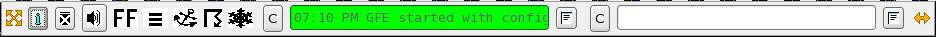

Most of the status messages will appear in the left status bar. The right status bar is reserved for incoming ISC traffic and Smart Init model arrival messages.



The "C" button causes the message log to be cleared from the display window, however the messages are still present if the user clicks the notepad button.
The "i" button at the left side of the AlertViz monitor will display information about the AlertViz monitor.